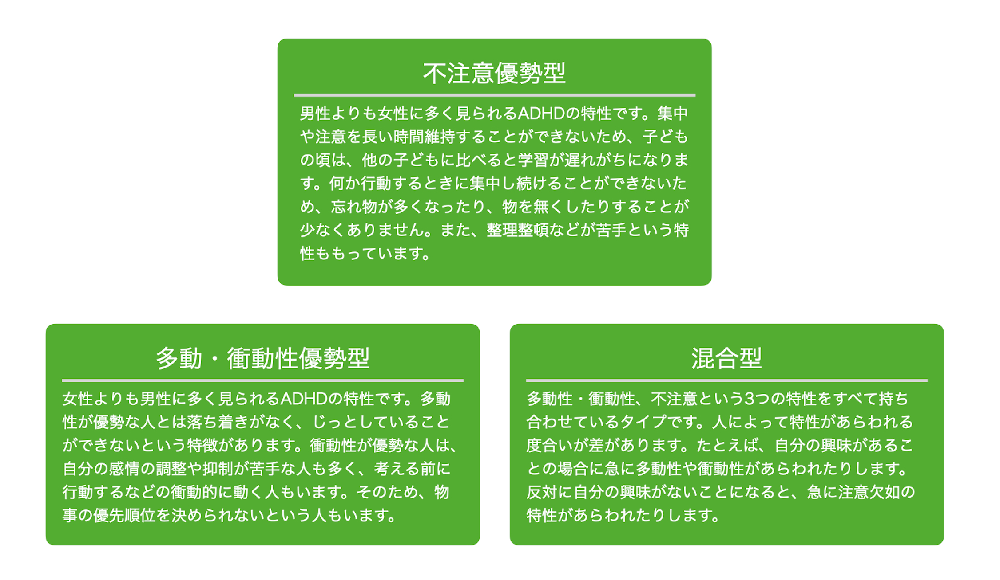

ADHDの基本情報
ADHDとは、「Attention-Deflict / Hyperactivity Disorder」の頭文字をとったものであり、日本では「注意欠如多動症」などと訳されています。身体には何らかの問題は見られないものの、行動の特徴から診断される症状です。
DSM-5におけるADHDの基本症状は、「不注意」、「多動性・衝動性」の2つです。これに、12歳以前の発症、家庭や学校、職場など2つ以上の状況で症状が存在すること、という条件がついています。不注意、多動性・衝動性の症状が、発達段階と不釣り合いであり、その症状があるために日常生活において不適応を起こしている場合に、ADHDという診断が必要となります。厚生労働省の調査では6歳から12歳の子どもの3〜7%に症状があらわれるとされています。
ADHDの分類
不注意、多動性・衝動性の基本症状の現れ方には、下図の3つのタイプがあります。ただし、これらの3つの症状は、同時にすべてあらわれるというわけではありません。「多動」が目立つ場合もありますし、「衝動」が目立つ場合もあります。また、「不注意」が症状として強く出る場合もありますし、全ての症状があらわれることもあります。
このようにADHDの症状のあらわれ方は、さまざまなのです。また、成長の途中ではある症状が抑えられたり、症状が目立たなくなったりします。ADHDの症状は主に3つのタイプに分けられますが、不注意、多動性・衝動性のいずれも見られる混合型のタイプがほとんどを占めているとも言われています。
ADHDの症状
不注意、多動性・衝動性とは具体的にどのような症状なのか、DSM-5に掲載されているものを紹介します。
- 不注意
-
- 学業、仕事、または他の活動中に、しばしば綿密に注意することができない、または不注意な間違いをする。
- 課題または遊びの活動中に、しばしば注意を持続することが困難である。
- 直接話しかけられたときに、しばしば聞いていないように見える。
- 課題や活動を順序立てることがしばしば困難である。
- 精神的努力の持続を要する課題に従事することをしばしば避ける、嫌う、またはいやいや行う。
- 課題や活動に必要なものをしばしばなくしてしまう。
- しばしば外的な刺激によってすぐ気が散ってしまう。
- しばしば日々の活動で忘れっぽい。
- 多動性および衝動性
-
- しばしば手足をそわそわと動かしたりトントン叩いたりする、またはいすの上でもじもじする。
- 席についていることが求められる場面でしばしば席を離れる。
- 不適切な状況でしばしば走り回ったり高い所へ登ったりする（青年または成人では、落ち着かない感じのみに限られるかもしれない）。
- 静かに遊んだり余暇活動につくことがしばしばできない。
- しばしば"じっとしていない"、またはまるで"エンジンで動かされているように"行動する。
- しばしばしゃべりすぎる。
- しばしば質問が終わる前に出し抜いて答え始めてしまう。
- しばしば自分の順番を待つことが困難である。
- しばしば他人を妨害し、邪魔する（例：会話、ゲーム、または活動に干渉する）。